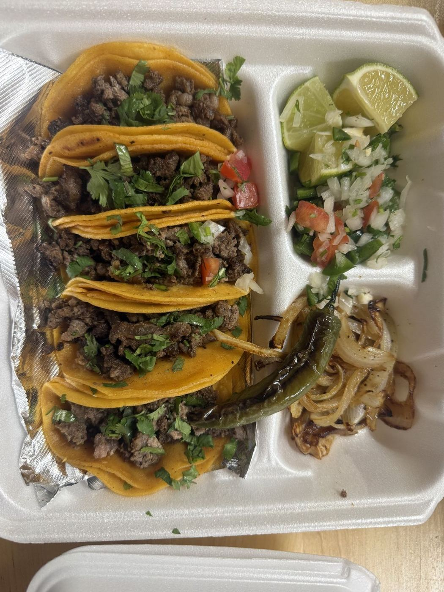
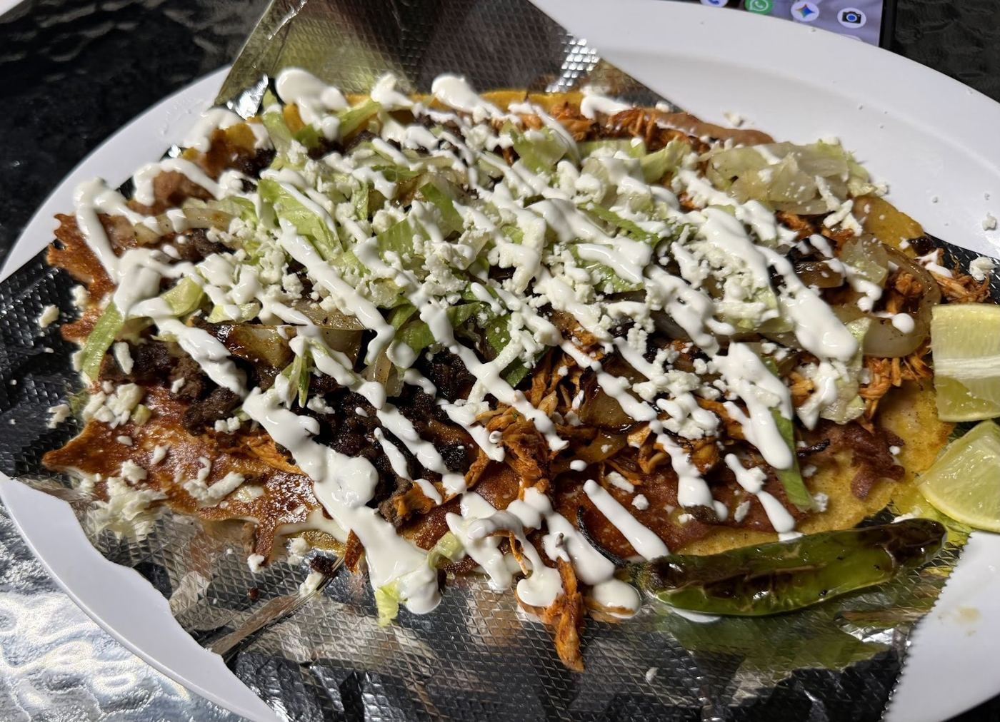
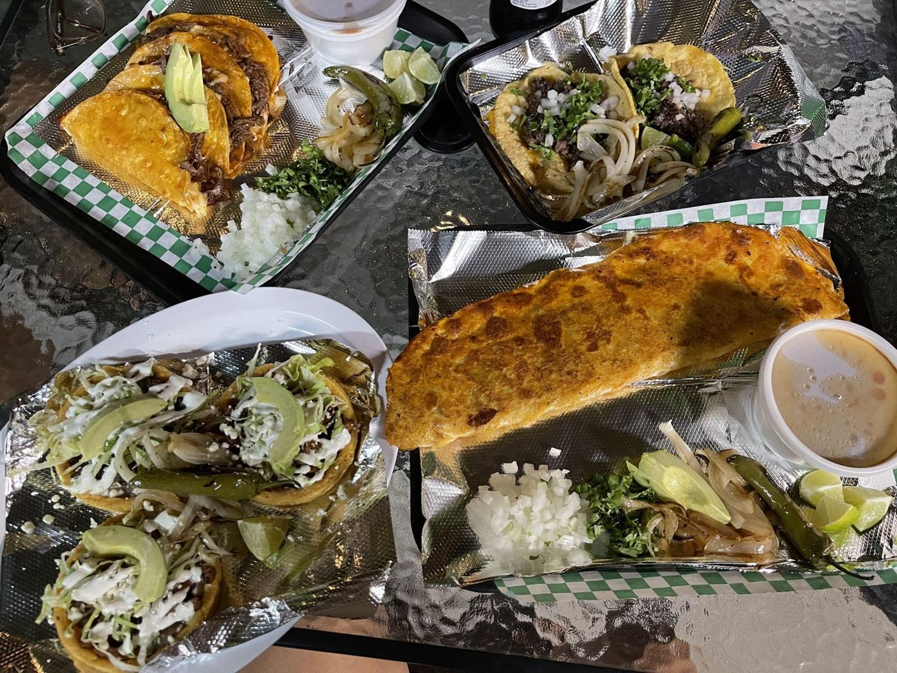
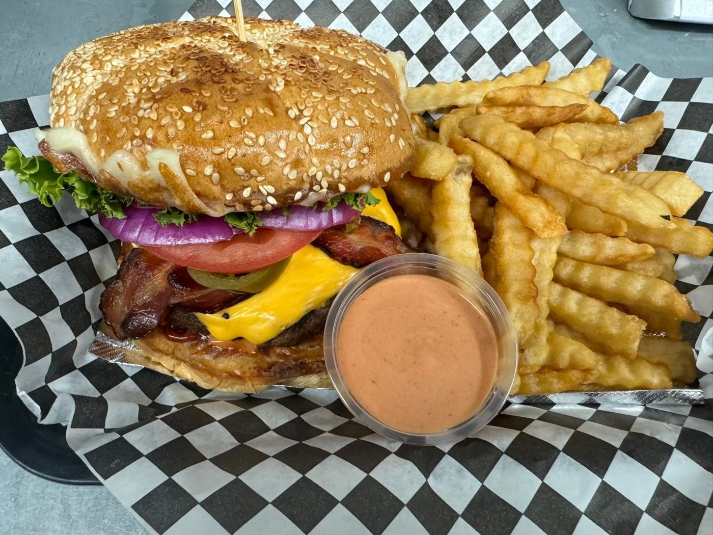
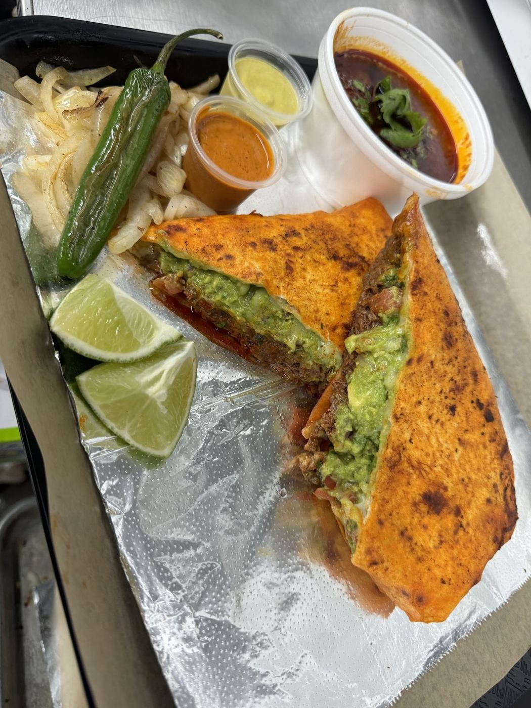
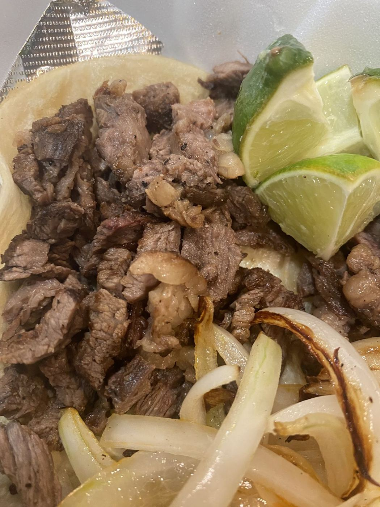
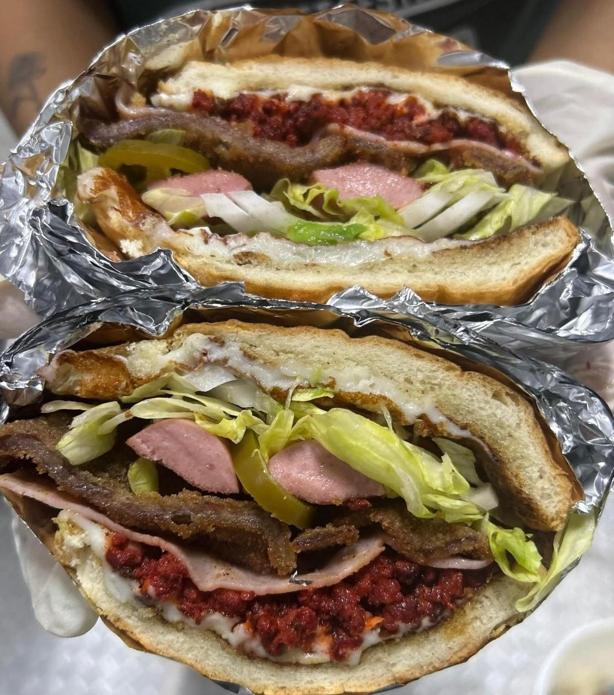
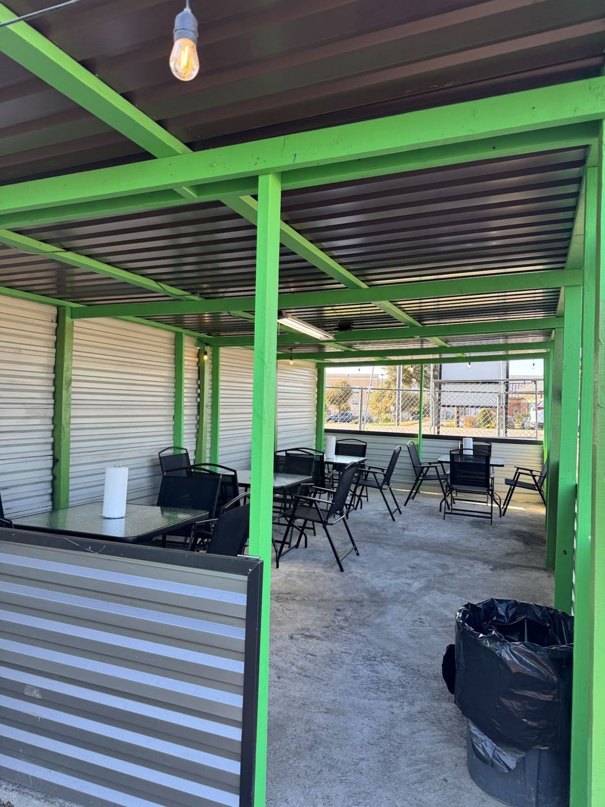
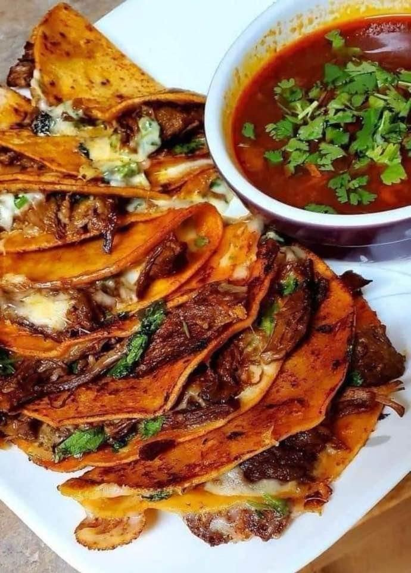

OPEN TILL 11 · FRI–SAT TILL MIDNIGHT
Late-night tacos in Pflugerville
A taco trailer on FM 1825 serving birria, flautas and mini street tacos. 4.9★ from 71 Google reviews.
Call aheadDirectionsTonight’s order
Birria meal“Made with love”
Chicken flautasCrispy, perfectly cooked
Mini street tacosAsada or al pastor
Big portionsReady to go
Late hoursTill 11 PM Mon–Thu, midnight Fri–Sat
Pay your wayCash tip jar, cards welcome








Logged reviews
Got the birria meal and I am definitely coming back. Food was made with love. Definitely felt like I was back home. Lived in Pflugerville and it’s been hard finding what use to taste like little village from Chicago. My taste buds we reactivated 🥰 Thai you so much!!!
The Chinken Flautas and the beef asada or el pastor Mini street tacos are sooooooo Good!!! My new favorite taco spot lol been here 3 times this week! Can't stop thinking about it! The portions are really good and Amazing customer service.
I love that this taco place has a jar for cash tips but when I paid with card they didn't put a screen in my face asking if I wanted to leave a tip. And the food speaks for its self. It's so good. Will definitely be returning.